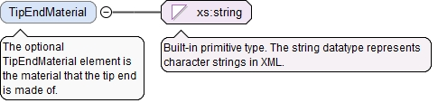

<xs:element name="TipEndGeometry" type="TipEndGeometryType" minOccurs="0"><xs:annotation><xs:documentation>The optional TipEndGeometry element is the shape of the end of the tip, i.e. the thing at the end of the tip that contacts an object being probed.</xs:documentation></xs:annotation></xs:element>
<xs:element name="TipEndDiameter" type="LinearValueType" minOccurs="0"><xs:annotation><xs:documentation>The optional TipEndDiameter element is the nominal diameter of the end of the probe tip.</xs:documentation></xs:annotation></xs:element>
The optional TipEndMaterial element is the material that the tip end is made of.
Diagram

Type
xs:string
Properties
content
simple
minOccurs
0
Source
<xs:element name="TipEndMaterial" type="xs:string" minOccurs="0"><xs:annotation><xs:documentation>The optional TipEndMaterial element is the material that the tip end is made of.</xs:documentation></xs:annotation></xs:element>
The optional StemMaterial element is the material that the stem of the tip is made of.
Diagram
Type
xs:string
Properties
content
simple
minOccurs
0
Source
<xs:element name="StemMaterial" type="xs:string" minOccurs="0"><xs:annotation><xs:documentation>The optional StemMaterial element is the material that the stem of the tip is made of.</xs:documentation></xs:annotation></xs:element>
<xs:element name="StemDiameter" type="LinearValueType" minOccurs="0"><xs:annotation><xs:documentation>The optional StemDiameter element is the diameter of the stem of the probe tip.</xs:documentation></xs:annotation></xs:element>
The required id attribute is the QIF id of the measurement resource, used for referencing.
Source
<xs:complexType name="ProbeTipType"><xs:annotation><xs:documentation>The ProbeTipType defines a tip of a tactile probe. A probe tip has a stem and an end. A ProbeTipType may or may not be detachable.</xs:documentation></xs:annotation><xs:complexContent><xs:extension base="MeasurementResourceBaseType"><xs:sequence><xs:element name="TipEndGeometry" type="TipEndGeometryType" minOccurs="0"><xs:annotation><xs:documentation>The optional TipEndGeometry element is the shape of the end of the tip, i.e. the thing at the end of the tip that contacts an object being probed.</xs:documentation></xs:annotation></xs:element><xs:element name="TipEndDiameter" type="LinearValueType" minOccurs="0"><xs:annotation><xs:documentation>The optional TipEndDiameter element is the nominal diameter of the end of the probe tip.</xs:documentation></xs:annotation></xs:element><xs:element name="TipEndMaterial" type="xs:string" minOccurs="0"><xs:annotation><xs:documentation>The optional TipEndMaterial element is the material that the tip end is made of.</xs:documentation></xs:annotation></xs:element><xs:element name="StemMaterial" type="xs:string" minOccurs="0"><xs:annotation><xs:documentation>The optional StemMaterial element is the material that the stem of the tip is made of.</xs:documentation></xs:annotation></xs:element><xs:element name="StemDiameter" type="LinearValueType" minOccurs="0"><xs:annotation><xs:documentation>The optional StemDiameter element is the diameter of the stem of the probe tip.</xs:documentation></xs:annotation></xs:element></xs:sequence></xs:extension></xs:complexContent></xs:complexType>